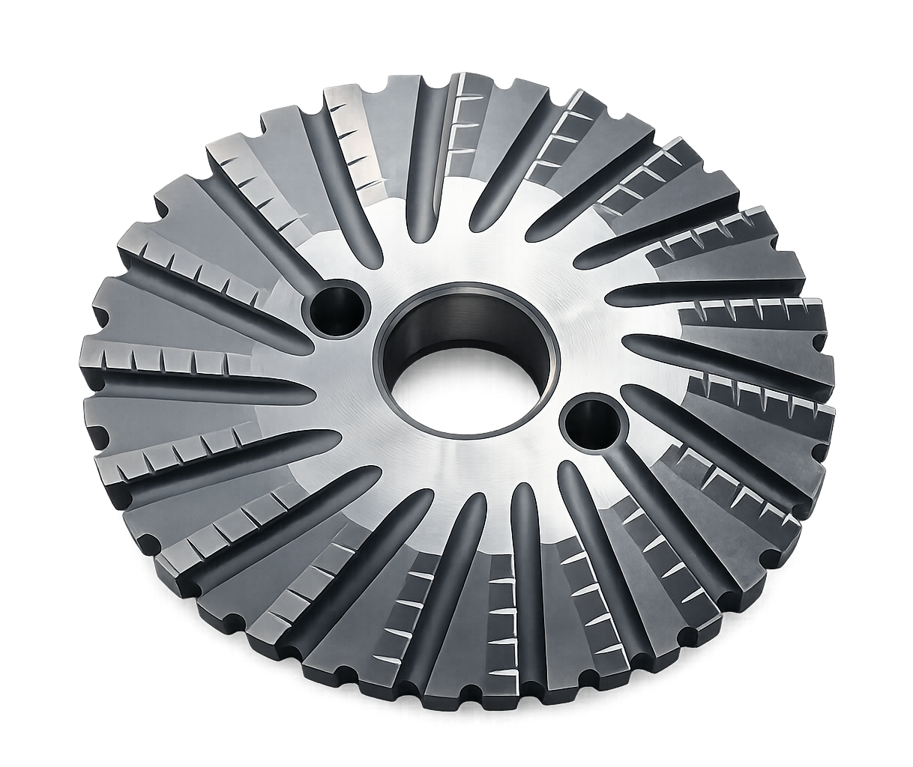

Chain-Driven Pipe Cold Cutting & Beveling Machine
219–820 mm
Voljanka - a chain-driven pipe cold cutting and beveling machine for pipes from 219 to 820 mm in diameter. Spark-free, in-service cutting that leaves a weld-ready edge on oil and gas pipelines.
It cuts the pipe with an angle milling cutter and prepares the weld edge (beveling) simultaneously — no heat, no sparks and no heat-affected zone (HAZ), suitable for hazardous, hydrocarbon-containing areas where hot work is prohibited.
Contact us
Annular cutters
Consumable for the cutting machine

Annular cutters
Consumable for the cutting machine
Technical specifications
| Cutting tool | Angle / form milling cutter, with simultaneous beveling |
|---|---|
| Cutting-tool rotation speed | 54 ± 2 rpm |
| Cutting-tool feed rate | 27 ± 2 mm/min |
| Pipe cutting time | 20 min (Ø219) to 69 min (Ø820) |
| Max cutting depth per pass — cutter Ø135 × 25 | 12 mm |
| Max cutting depth per pass — cutter Ø140 × 25 | 16 mm |
| Cut-contour mismatch, max | 2.0 mm |
| Drive | Electric — 1.5 kW, 1500 rpm |
| Coolant (cutting-fluid) supply | 100 l/h at 0.75 ± 0.25 MPa |
| Power supply | 380 V / 50 Hz, min 5 kW |
| Overall dimensions (L × W × H) | 790 × 395 × 310 mm |
| Weight, max | 95 kg |
| Explosion protection | Hazardous areas Zone 1 & 2 — Ex marking II Gb c/k IIA T3 |
Explosion-proof design certified to Russian standards GOST 31438.1 (≈ EN 1127-1), GOST 30852.11 & 30852.5 (gas group IIA, temperature class T3 — per IEC 60079) and the PUE electrical code, ch. 7.3 (≈ IEC 60079-14); climatic version per GOST 15150 (≈ IEC 60721).
Supplied as a complete set: machine with electric motor, control system, coolant-supply system, grounding device and documentation.